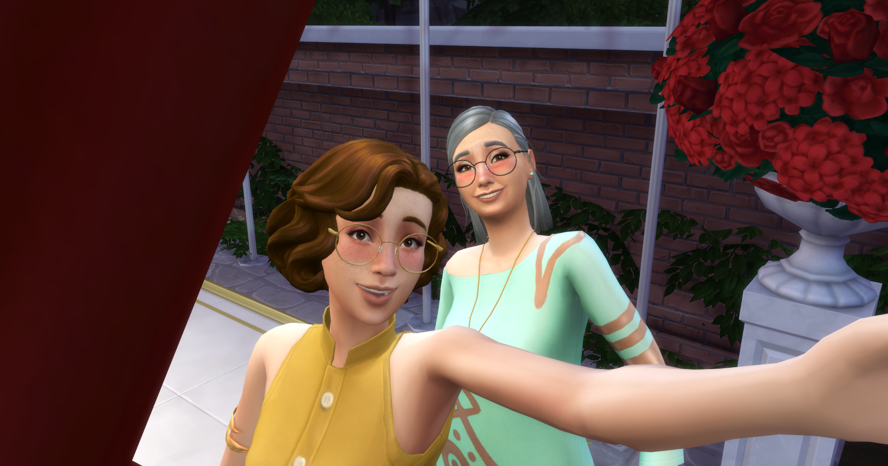
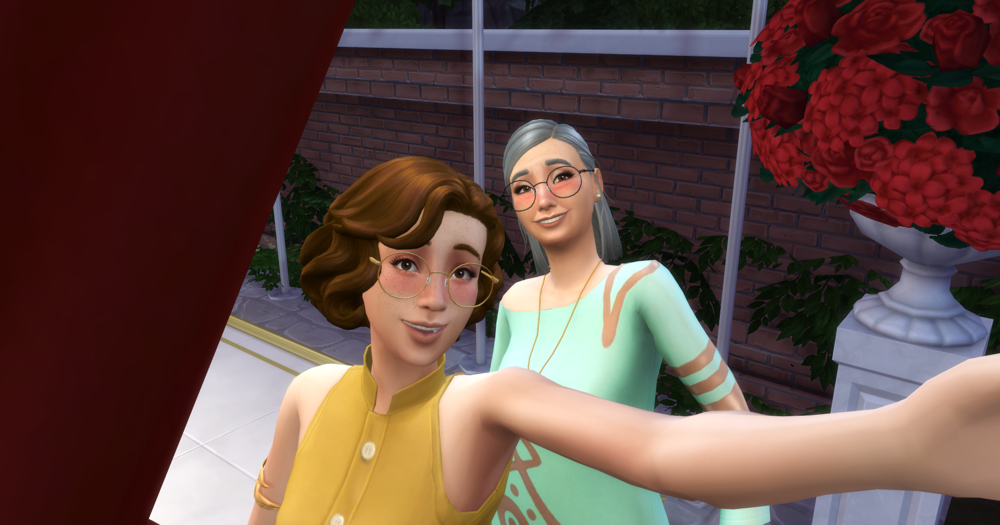

I am a Digital Consultant at Shift Digital and a student in the MSU UX Master’s program. My background is in STEM, so I prioritize data-driven and accessible techniques to implement functional, beautiful designs in my work. Don’t hesitate to reach out to chat about my work!
The Sims 4 is my favorite game of all time. It combines elements of pretend play (something I was never good at as a kid) with the visuals of a 3D simulator, plus features for interior design, fas...
 
